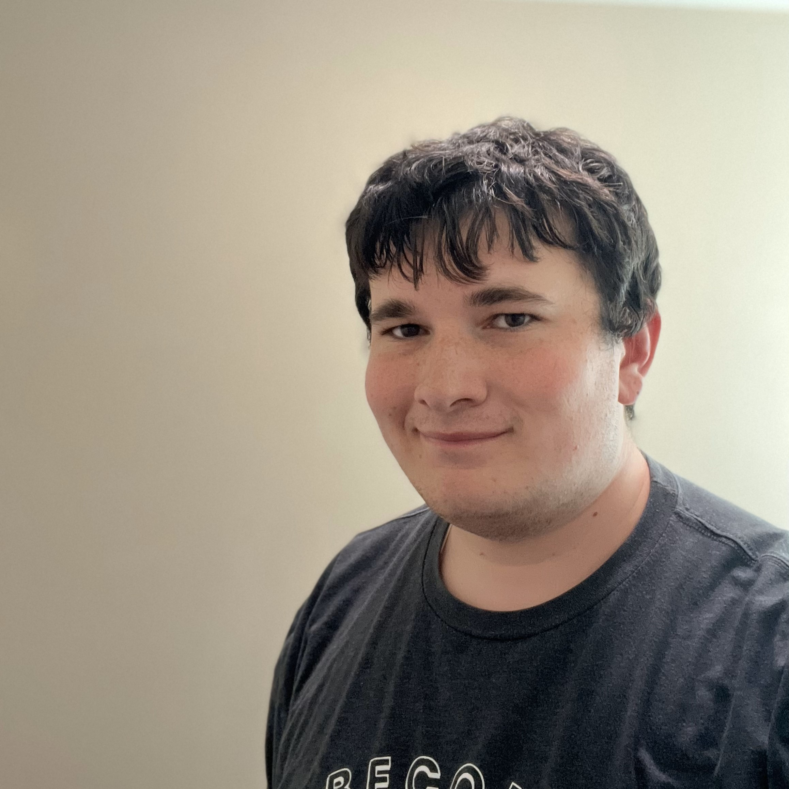
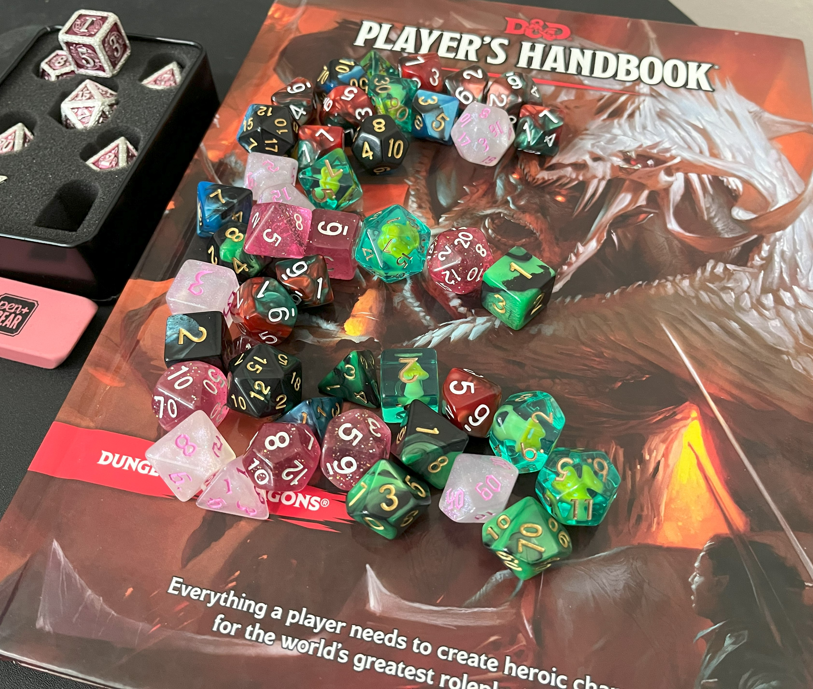

About Me
Who am I?
I’m Emory Smith. From an early age I was prone to using my imagination to come up with personal short stories of my own. As I’ve grown up, they’ve gotten more complicated. In addition, I love video games, and so I have a decent influence from them. As of writing this I’ve graduated high school and have served a mission in California. As of now, I’m studying for a Computer Science degree. I still play video games and love Minecraft, but also the Ace Attorney series. I’ve learned a good story can cheer someone up in a way nothing else can. And I hope to one day share stories with my future family.
My foray into Dungeons & Dragons
I got into Dungeons and Dragons in what I would say is a classic way, at summer camp. I was working up at one as a staff member and was trying to be social. One day at our recreational center for the staff I came across Dungeons and Dragons. As a lover of fantasy stories, the game interested me. I soon began to dive into the world and haven’t escaped since. Now I have way too many characters I’ll never use and have read through both the players handbook and monster manual nearly completely.
Why I began this project
Sometime in High School I wanted to play Dungeons and Dragons. The only issue was there was no campaign. So, I began making my own. Thus began the creation of Valares. It never went through, and the project ultimately remained unfinished. However, during my mission I wanted to find new ways to relax during my free time. I soon began to pick the project back up, but on a larger scale. I began to flesh out the rest of the world. Building each continent, laying down some history. Now, I am still working on this project as it slowly grows, new histories, nations, and locales. And it’s not stopping anytime soon.